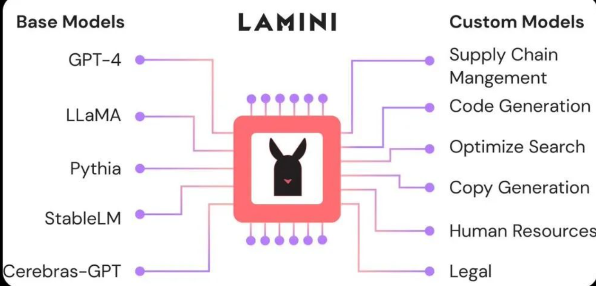
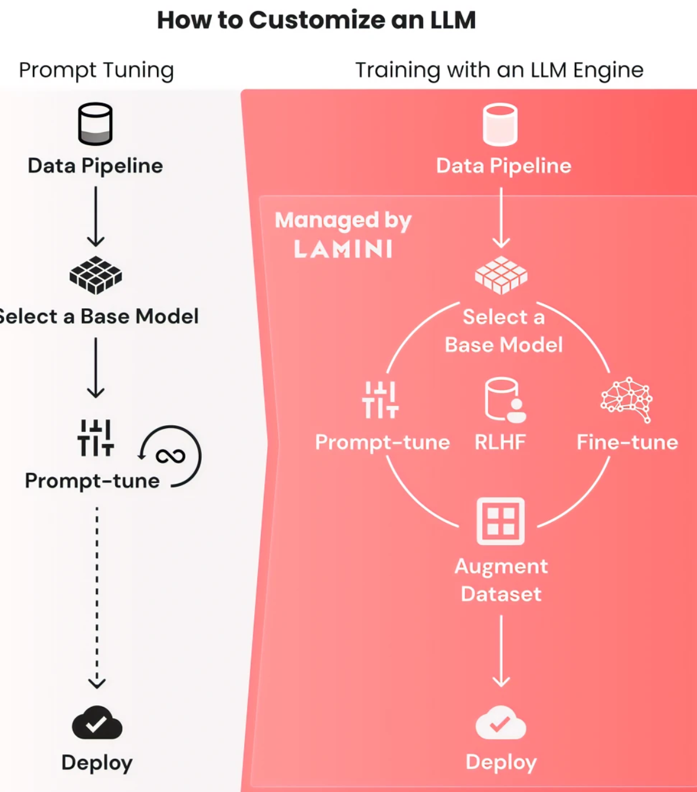
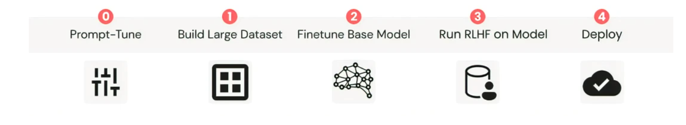

Lamini LLM引擎学习
相关链接：神奇LLM引擎上线！帮你把GPT-3直接调成ChatGPT

项目地址：https://lamini.ai/
产品定位：
（1）Lamini 将微调封装成一种服务，使开发人员可以轻松将 GPT-3 微调成 ChatGPT。供开发人员使用很多公司、机构的基础模型快速构建定制化模型。
（2）Lamini 提供了一种托管化的数据生成器，只需执行 Lamini 库中的几行代码，用户就能训练自己的大型语言模型（LLM）及其权重，而无需使用任何 GPU。
简介

作用

1. 对 ChatGPT 或其他模型进行 prompt 调整。
Lamini 库的 API 提供快速调优功能，只需一行代码即可在 OpenAI 的模型和其他开源模型之间切换。Lamini 库还提供了优化之后的正确 prompt，以便于用户根据模型设置不同格式的 prompt。
2. 构建一个输入输出对的大型数据集。
该数据集将让模型理解它应如何响应其输入。使用 Lamini 引擎，用户可以仅用几行代码就快速从 100 个数据点生成 50k 数据点，而无需启动任何 GPU。Lamini 也提供了一个 50k 的开源数据集。
3. 在数据集上微调基础模型。
Lamini 的研究团队在其 50k 的开源数据集上微调出一个 LLM，后续他们将发布执行此操作的功能和代码。
4. 在经过微调的模型上运行 RLHF。Lamini 库让用户不再需要大型 ML 和人工标记团队来运行 RLHF。
5. 方便用户将模型部署到云端。
数据生成器
Lamini 提供了一个托管数据生成器，只需几行代码即可将 100 个样本变成超过 50k 个样本，而不需要启动任何 GPU，并且生成的数据是商业可用的。用户可以自定义最初的 100 多条指令，以便生成的 5 万条符合要求的指令，最终得到一个大型指令遵循数据集。
Lamini 的数据生成器是一个 LLM pipeline，其灵感来自斯坦福的开源模型 Alpaca。这个生成 pipeline 使用 Lamini 库来定义和调用 LLM，以生成不同但相似的指令 - 响应对。